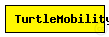
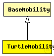

This documentation is released under the Creative Commons license
This documentation is released under the Creative Commons licenseA LOGO-style movement model, with the script coming from XML. It can be useful for describing random as well as deterministic scenarios.
First, a few examples.
Node will move along a square's borders:
<movement>
<set speed="10" angle="180"/>
<repeat n="4">
<forward d="50"/>
<turn angle="90"/>
</repeat>
</movement>
MassMobility (in which the node is assumed to have a mass, and cannot turn abruptly):
<movement>
<repeat>
<set speed="uniform(10,20)"/>
<turn angle="uniform(-30,30)"/>
<forward t="uniform(0.1,1)"/>
</repeat>
</movement>
Random Waypoint:
<movement>
<repeat>
<set speed="uniform(20,60)"/>
<moveto x="uniform(0,$MAXX)" y="uniform(0,$MAXY)"/>
</repeat>
</movement>
Commands (XML element names) are: repeat, set, forward, turn, wait, moveto, and moveby.
Accepted attributes:
Attribute values can be literal numbers (e.g. x="100"), or any distribution accepted in omnetpp.ini (e.g. speed="uniform(10,20)"). A new value will be chosen each time the statement is executed. The $MAXX and $MAXY strings will be substituted with the playground width and height minus 1, respectively.
t is time interval, calculated from the end of the previous movement. x, y are absolute coordinates with <set> and <moveto>, and relative with <moveby>. angle is clockwise in degrees, with 0 pointing west. d is distance in meters (speed is m/s).
borderPolicy controls what happens when a node reaches the edge of the playground, and can take one of the values "reflect", "wrap", "placerandomly". In the first case, the node reflects off the wall; with "wrap", it'll come in on the other side (torus); and with "placerandomly", it will be placed at a random position on the playground.
In addition to the node position, the module maintains two interval variables, 'speed' and 'angle', which can be adjusted by <set> and <turn>. The <forward> statement, if only t or d is given, uses the speed variable. If you specify d and t together, that determines speed as well, so the speed variable will be ignored completely.
Likewise, <moveto> and <moveby> will ignore the angle variable, and will only use the speed variable if the t attribute is omitted.
If the repeat count n is omitted for the <repeat> statement, that means an infinite loop.
You can find the DTD with the sources: TurtleMobility.dtd.
NOTE: Does not yet support 3-dimensional movement.
See also: ConnectionManager
Author: Andras Varga
The following diagram shows usage relationships between types. Unresolved types are missing from the diagram. Click here to see the full picture.
The following diagram shows inheritance relationships for this type. Unresolved types are missing from the diagram. Click here to see the full picture.
| Name | Type | Description |
|---|---|---|
| BaseMobility | simple module |
Module which is responsible for mobility related information like position and movement BaseMobility itself defines a static mobility pattern (means only a position, no movement). Mobility modules which extend from this module will define more complex movement patterns. |
| Name | Type | Default value | Description |
|---|---|---|---|
| notAffectedByHostState | bool | true | |
| coreDebug | bool | false |
debug switch for the core framework |
| constraintAreaMinX | double | -1m/0 |
min x position of the constraint area, unconstrained by default (negative infinity) |
| constraintAreaMinY | double | -1m/0 |
min y position of the constraint area, unconstrained by default (negative infinity) |
| constraintAreaMinZ | double | -1m/0 |
min z position of the constraint area, unconstrained by default (negative infinity) |
| constraintAreaMaxX | double | 1m/0 |
max x position of the constraint area, unconstrained by default (positive infinity) |
| constraintAreaMaxY | double | 1m/0 |
max y position of the constraint area, unconstrained by default (positive infinity) |
| constraintAreaMaxZ | double | 1m/0 |
max z position of the constraint area, unconstrained by default (positive infinity) |
| initialX | double | uniform(constraintAreaMinX, constraintAreaMaxX) |
initial x coordinate of the nodes' position |
| initialY | double | uniform(constraintAreaMinY, constraintAreaMaxY) |
initial y coordinate of the nodes' position |
| initialZ | double | uniform(constraintAreaMinZ, constraintAreaMaxZ) |
initial z coordinate of the nodes' position |
| initFromDisplayString | bool | false |
initial position will be read from display string |
| debug | bool | false |
debug switch |
| turtleScript | xml |
describes the movement |
|
| updateInterval | double |
time interval to update the hosts position (in seconds) |
| Name | Value | Description |
|---|---|---|
| display | i=block/cogwheel | |
| class | TurtleMobility |
// // A LOGO-style movement model, with the script coming from XML. It can be // useful for describing random as well as deterministic scenarios. // // First, a few examples. // // Node will move along a square's borders: // // <pre><nohtml> // <movement> // <set speed="10" angle="180"/> // <repeat n="4"> // <forward d="50"/> // <turn angle="90"/> // </repeat> // </movement> // </nohtml></pre> // // MassMobility (in which the node is assumed to have a mass, and cannot turn // abruptly): // // <pre><nohtml> // <movement> // <repeat> // <set speed="uniform(10,20)"/> // <turn angle="uniform(-30,30)"/> // <forward t="uniform(0.1,1)"/> // </repeat> // </movement> // </nohtml></pre> // // Random Waypoint: // // <pre><nohtml> // <movement> // <repeat> // <set speed="uniform(20,60)"/> // <moveto x="uniform(0,$MAXX)" y="uniform(0,$MAXY)"/> // </repeat> // </movement> // </nohtml></pre> // // Commands (XML element names) are: repeat, set, forward, turn, wait, // moveto, and moveby. // // Accepted attributes: // - repeat: n (optional) // - set: x, y, speed, angle, borderPolicy (all optional) // - forward: d, t (at last one of them must be present) // - turn: angle (required) // - wait: t (required) // - moveto: x, y, t (all optional) // - moveby: x, y, t (all optional) // // Attribute values can be literal numbers (e.g. x="100"), or any // distribution accepted in omnetpp.ini (e.g. speed="uniform(10,20)"). // A new value will be chosen each time the statement is executed. // The $MAXX and $MAXY strings will be substituted with the // playground width and height minus 1, respectively. // // t is time interval, calculated from the end of the previous movement. // x, y are absolute coordinates with <set> and <moveto>, and relative // with <moveby>. angle is clockwise in degrees, with 0 pointing west. // d is distance in meters (speed is m/s). // // borderPolicy controls what happens when a node reaches the edge of the // playground, and can take one of the values "reflect", "wrap", // "placerandomly". In the first case, the node reflects off the wall; // with "wrap", it'll come in on the other side (torus); and with // "placerandomly", it will be placed at a random position on the // playground. // // In addition to the node position, the module maintains two interval variables, // 'speed' and 'angle', which can be adjusted by <set> and <turn>. // The <forward> statement, if only t or d is given, uses the speed variable. // If you specify d and t together, that determines speed as well, // so the speed variable will be ignored completely. // // Likewise, <moveto> and <moveby> will ignore the angle variable, // and will only use the speed variable if the t attribute is omitted. // // If the repeat count n is omitted for the <repeat> statement, that // means an infinite loop. // // // // You can find the DTD with the sources: TurtleMobility.dtd. // // NOTE: Does not yet support 3-dimensional movement. // @see ConnectionManager // @author Andras Varga // simple TurtleMobility extends BaseMobility { parameters: @class(TurtleMobility); bool debug = default(false); // debug switch xml turtleScript; // describes the movement double updateInterval @unit(s); // time interval to update the hosts position (in seconds) }
This documentation is released under the Creative Commons license